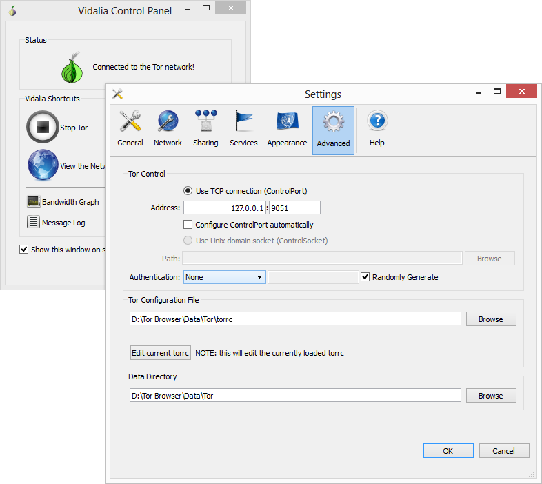
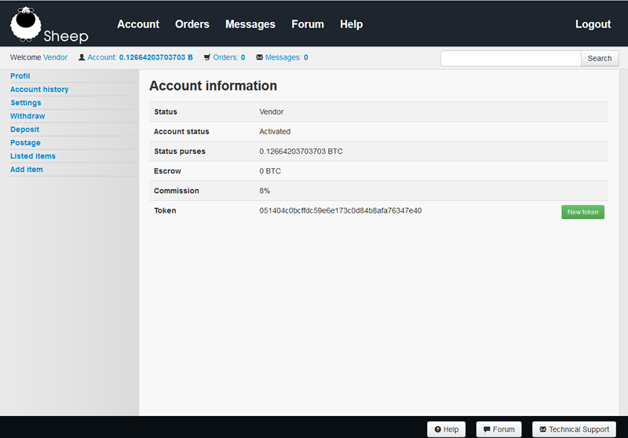
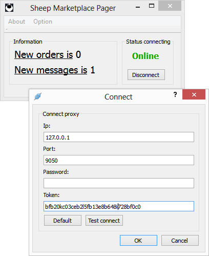
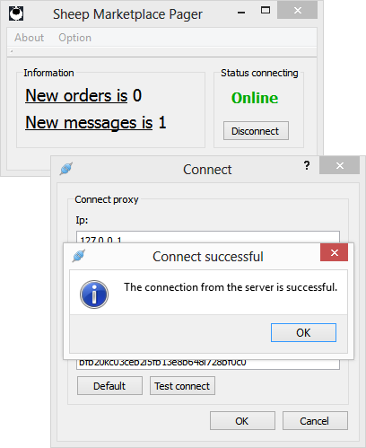
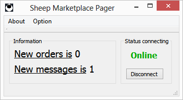
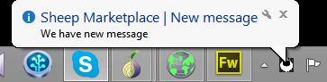

Sheep Marketplace Pager
There was one idea. To receive notifications of new orders by e-mail. We could not carry out this idea because of security problems.
We wondered how to resellers and customers to make life easier here at Sheep Marketplace.
That is why the Pager!
Pager is written in Qt 5 (C + +) and uses a proxy server Tor and our API, we opened a community. More about API.
Pager is perfectly safe and does not need to worry about the revelation!
First you need to run the Tor Browser Bundle and make a minor adjustment to the settings. According Image Authentication should be set to NONE.

Then you need to copy the token, which you find in your account.

Token you need to copy the settings Pager (Option> Connect).

Click 'Test connect' notice if the connection works.

If everything works the pager every 5 minutes to detect your account status.

The program can also minimize the discretion and will be reported to the state.

The program is only an experiment and a small gift for you. If interested in this supplement will make him our team develop.
If interested in other options for Linux and MacOS will not be a problem for us to prepare packages for MacOS and Linux.
If you have ideas how to improve this accessory please contact us! :)
|